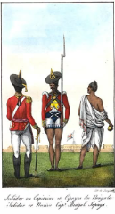

Mémoires relatifs à l'expédition anglaise partie du Bengale en 1800 pour aller combattre en Égypte l'armée d'Orient
یہ کتاب مجھے اس سوال کی تلاش کے دوران ملی تھی کہ پہلی بار ہندوستانی سپایی ہندوستان سے باہر لڑنے کیلئے کب بھیجے گئے تھے؟ تو مجھے اس کتاب کا پتا چلا جس نے میں بتایا گیا ہے کہ نپولین کے مصر پر قبضے کے دوران پہلی بار ہندوستان سے سپاہی لڑنے کیلئے مصر بھیجے گئے تھے۔۔

1
MÉMOIRES RELATIFS A L'EXPÉDITION ANGLAISE PARTIE DU BENGALE EN 1800 POUR ALLER COMBATTRE EN ÉGYPTE L'ARMÉE D'ORIENT; Par M. le Comte de NOÉ, Pair de France. 1826.
انگریزی مہم کے بارے میں یادداشتیں جو 1800ء میں بنگال سے مصر میں فرانسیسی فوج سے لڑنے روانہ ہوئی، مصنف کاؤنٹ دے نوے، 1826ء

2
CARTE POUR INDIQUER la Route des différentes Expéditions contre l'Egypte en 1801
1801ء میں مصر کے خلاف مختلف مہموں کے راستے دکھانے والا نقشہ

3
Subidar ou Capitaine et Cipayes du Bengale. Subidar or Native Cap.t Bengal Sepays.
بنگال کے صوبیدار یا کپتان اور سپاہی

4
Cavalerie Indienne. Officier Indien Cipayes. Costumes de Madras.
ہندوستانی رسالہ۔ سپاہیوں کا ہندوستانی افسر۔ مدراس کے لباس

5
Lascar d'Artillerie. Bombay Sepoy. Parsy. Costumes de Bombay.
توپ خانے کا لشکر۔ بمبئی سپاہی۔ پارسی۔ بمبئی کے لباس

6
Brachmanes Indiens. Indian Bramins
ہندوستانی برہمن

7
Scène de la Danse du Serpent.
سانپ کے رقص کا منظر

8
Le Talipot ou Arbre à Eventail de Ceylan. Corypha Umbraculifera. Linn.
تالیپاٹ، سیلون کا پنکھا درخت

9
Vue du Fort de Colombo-Ceylan, prise de la Rade. View of Colombo Ceylon taken from the Roads.
کولمبو (سیلون) کے قلعے کا منظر، بندرگاہ سے لیا گیا

10
Chalias ou Caste des Caneliers de Ceylan.
چالیا یا سیلون کے دارچینی والوں کی ذات

11
Peseur de l'Inde
ہندوستان کا تولنے والا / صراف

12
Vue de la ville et du Fort d'Aden. View of the Town & Fort of Aden. Côte d'Arabie Felix.
عدن شہر اور قلعے کا منظر، عرب فیلکس کے ساحل پر

13
Vue de Moka prise de la Rade.
موکا کا منظر، بندرگاہ سے لیا گیا

14
Fellah ou Paysan Egyptien.
فلاح یا مصری کسان

15
Arabes Bédouins.
بدوی عرب

16
Janissaire. Pacha. Dervich. Costumes Turcs.
جنیسری۔ پاشا۔ درویش۔ ترک لباس

17
Mamlouks.
مملوک

18
CARTE GÉNÉRALE de L'ÉGYPTE et de L'ARABIE PÉTRÉE
مصر اور سنگلاخ عرب کا عمومی نقشہ